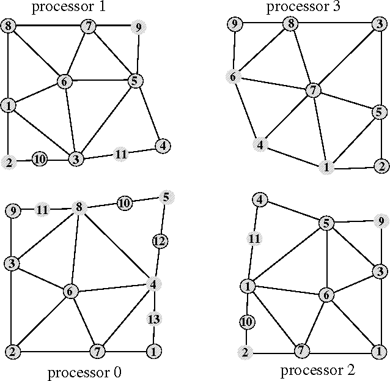

These operators return arrays of node ( pNode) numbers on the partition boundary and also establish the correspondence between the node numbers of two adjacent processors. They can be used as gather/scatter maps for the exchange of solution values between processors. Let dofs denote the array of values corresponding to the nodes. Let also p1.smap.p2 be the array returned by call to pmdb_send_map_node on processor p1 corresponding to the partition boundary with p2. Similarly, let p2.rmap.p1 be the array returned by call to pmdb_recv_map_node on processor p2 corresponding to the partition boundary with p1. Then the dofs are related by:
dofs[p1.smap.p2[i]] = dofs[p2.rmap.p1[i]]
Figure a.2 is used to illustrate these operators whose details are given below.

Figure: Example illustrating the pNodes and their gather scatter maps
long pmdb_all_map_nodes( pMeshPB pmeshpb, /* IN */ long *map) /* OUT */
This routine returns all the maps (numbers) for the nodes on the
partition boundary in array map. The size of map is assumed to be
pmdb_size_all_map_nodes
() and
should be allocated by the user before this routine is called.
For the example mesh in Figure a.2, the following map is
returned if executed on the processor 0.
map = [8,9,5,4,1,10,11,12,13]
void pmdb_clean_pbnodes( pMeshPB pmeshpb) /* IN */
This operator cleans the memory that was used in storing partition boundary node mappings. It can be called right after one is done getting the maps. It should be called if pmdb_init_pbnodes () will be invoked later.
long pmdb_init_pbnodes( pMeshPB pmeshpb) /* IN */
This routine should be called before any of the gather/scatter map
retrieval routines are called in this section. The partition boundary
entities are traversed and all the node numbers of pNodes attached
to these entities are collected. This routine does neighborhood
communications in order to pass the entity pointers and compute the
correspondent maps on processors which share boundary entities.
long pbop_map_node_size( pMeshPB pmeshpb, /* IN */ int ith) /* IN */
Returns the number of partition boundary nodes (pNodes)
adjacent to ith processor.
If executed on processor 0 with the mesh of
Figure a.2, the following will be returned ;
pbop_map_node_size(..,0) = 5 and
pbop_map_node_size(..,1) = 1.
In order to get the id corresponding to the ith processor, the routine
pmdb_adj_proc() can be used.
long pmdb_recv_map_node( pMeshPB pmeshpb, /* IN */ long *buffer, /* IN */ int ith) /* IN */
This routine puts the actual receive map on the ith adjacent processor
in the user provided long array buffer. Its functionality is
similar to pmdb_send_map_node.
On processor 0, if ith=0, i.e. the adjacent processor which has
id 1,
the call pmdb_recv_map_node(..,0) will return
buffer = [8,9,5,10,11].
long pmdb_send_map_node( pMeshPB pmeshpb, /* IN */ long *buffer, /* IN */ int ith) /* IN */
This routine puts the actual send map on the ith adjacent processor
in the user allocated long buffer. The size of the buffer can be
obtained by a call to pmdb_map_node_size.
When completed, this function returns the size
of map put on the buffer.
On processor 0, if ith=0, i.e. the adjacent processor which has
id 1,
the call pmdb_send_map_node(..,0) will return
buffer = [5,9,8,11,10].